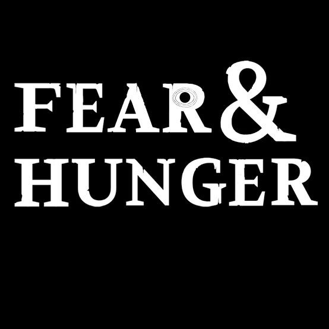
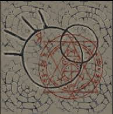

Um Quiz proposto para falar um pouco sobre Fear & Hunger, um jogo sobre uma dungeon na qual 6 personagens se encontram (sendo 4 deles jogaveis (ou membros de equipe) e os outros dois apenas membros (cada personagem pode gerar um final novo)). Nesse mundo existem 4 deuses antigos e os "novos deuses" que também são quatro mas são mais fracos e tendem a serem substituidos. Cada personagem foi para dungeon por um motivo diferente, principalmente (por minha opnião) o Enki, um Dark Priest que foi lá atrás de conhecimentos ocultos, o background dos personagens pode ser levemente modelado no inicio do jogo com questões como "seu irmão te venceu, você vai aceitar a derrota ou vai esfaquea-lo pelas costas?" com a primeira opção dizendo que você foi preso e ficou se alimentando e conversando apenas com insetos, permitindo você entende-los e a segunda que vocè virou um sucesso e primeiro te ensinam "necromancy" pedindo para você ressucitar o esqueleto de seu irmão, após isso você passa por diversas escolas em busca de novas magias e conhecimento, até descobrir que o unico lugar que pode sacia-lo está nas bibliotecas dessa dungeon
